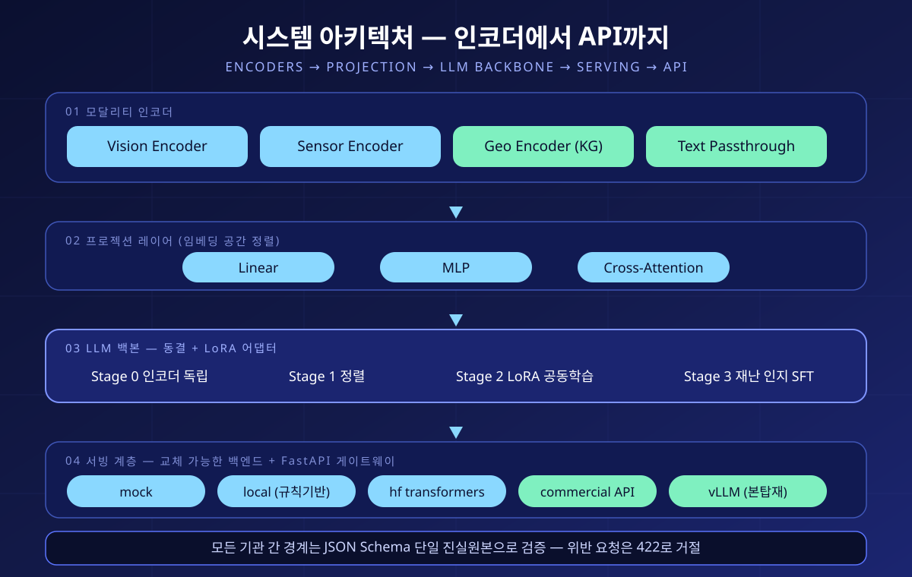
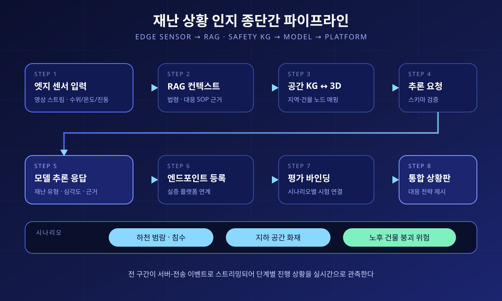

Urban Safety AI API — Multimodal Disaster Situational-Awareness Serving Software
도시안전 AI API — 재난 상황 인지 멀티모달 모델 서빙 소프트웨어



Research software that reads video, sensor, geospatial, and text modalities on a single LLM backbone to recognise fire, flood, and collapse situations, and hands the result to partner systems through standard schemas.
It gathers the training, serving, evaluation, and interface specifications of the multimodal foundation model into one codebase. A FastAPI gateway exposes single inference and the full end-to-end pipeline over REST and server-sent events, and every inter-organisation boundary is validated against a JSON Schema single source of truth. The inference backend is swapped with a single string, so the API paths, latency measurement, and reports can be exercised for real without a GPU or production weights.
Structure · Design
학습·서빙·평가·연계 규격을 함께 담은 Python 연구 소프트웨어이며, 코드는 여섯 갈래로 나뉜다. ① 인코더 계층 — 영상(Vision), 센서 시계열(Sensor), 공간정보(GeoEncoder), 텍스트 네 모달리티가 encode(inputs) → Tensor[B, T, D]라는 단일 추상 인터페이스를 구현한다. 계약만 지키면 새 모달리티를 붙여도 프로젝션과 학습 루프는 손대지 않는다. 센서는 1차년도 기본 경로를 통계량의 텍스트화 우회로 두고, 전용 인코더는 별도 PoC로만 병행한다. ② 프로젝션 계층 — Linear·MLP·Cross-Attention 세 방식을 팩토리로 교체하며 인코더 출력을 LLM 임베딩 공간에 정렬한다. ③ 학습 계층 — Stage 0(인코더 독립 베이스라인) → Stage 1(프로젝션 정렬) → Stage 2(LoRA 공동 미세조정) → Stage 3(재난 인지 SFT)의 4단계 스크립트와, 단계 전이의 진입·중단·롤백 기준 및 범용 성능 유지율 모니터링을 담당하는 공용 콜백으로 구성된다. 백본 LLM은 풀파인튜닝하지 않고 LoRA 어댑터로만 적응시키는 것이 원칙이다. ④ 서빙 계층 — FastAPI 게이트웨이와 다섯 종류의 추론 백엔드(목업, 규칙기반 로컬, HuggingFace transformers, 상용 API, vLLM). 백엔드는 문자열 하나로 교체되므로 GPU와 실모델 가중치가 없는 상태에서도 API 경로·지연 측정·리포트를 그대로 실측할 수 있고, 본탑재는 vLLM으로 바꾸기만 하면 된다. ⑤ 데이터 계층 — 코퍼스·SFT·Safety QA·센서 시계열·이미지 캡션·지식그래프 트리플 등 데이터셋 종류마다 JSON Schema를 두고 레코드 단위로 검증하며, 출처·라이선스·비식별화 메타가 없는 데이터는 학습에 진입하지 못한다. ⑥ 연계 규격 계층 — 기관 사이를 오가는 메시지(엣지 센서 입력, 검색 컨텍스트, 공간 지식그래프↔3D 매핑, 추론 요청·응답, 가중치 매니페스트, 엔드포인트 등록, 실증 평가 바인딩)를 JSON Schema 단일 진실원본으로 고정하고, 게이트웨이는 모든 경계에서 이 스키마로 입출력을 검증해 위반 시 422로 거절한다.
게이트웨이가 노출하는 엔드포인트는 /infer(단건 추론), /e2e(종단간 파이프라인 1회 관통), /stream/e2e(서버전송이벤트로 단계별 스트리밍), /warmup(모델 사전 로드), /register(실증 플랫폼 엔드포인트 등록), /latency(평균·p95 단일 추론 지연 측정), /model(모델 레지스트리 조회), /schemas·/data/schemas·/data/sample(연계 규격과 학습 데이터 형식 열람), /scenarios, /health, /metrics다. FastAPI가 자동 생성하는 /docs·/redoc·/openapi.json으로 규격을 그대로 공유하고, 브라우저에서 볼 수 있는 대시보드·규격 열람·데모·데이터 형식 화면을 정적 HTML로 함께 제공한다. 운영 편의를 위해 백그라운드 기동·강제 종료·재시작·상태 확인·실시간 로그 조회를 담당하는 런처를 별도로 두었고, 인증 없는 데모 서버가 외부에 열리지 않도록 기본 바인딩은 루프백 주소로 고정했다. 스택은 PyTorch · Transformers · PEFT(LoRA) · Accelerate · Datasets · FastAPI · Uvicorn · Pydantic · jsonschema · Neo4j · vLLM · MLflow · Weights & Biases이며, 학습률·LoRA rank·믹싱비·경로 같은 하이퍼파라미터는 모두 YAML 설정으로 외부화하고 소스에는 하드코딩하지 않는다.
Design goals
재난 대응의 어려움은 정보가 없어서가 아니라 서로 다른 종류의 정보가 따로 논다는 데 있다. CCTV·드론 영상, 수위·온도·진동 센서, 건물과 대피시설의 공간 정보, 법령과 표준작전절차 같은 텍스트가 각각 다른 시스템에 흩어져 있고 최종 판단은 사람이 머릿속에서 합친다. 이 소프트웨어는 그 네 갈래를 하나의 LLM 백본 위에서 함께 읽어 상황 유형과 심각도를 인지하고, 판단 근거를 함께 돌려주는 것을 목표로 한다.
설계에서 가장 중요하게 잡은 첫 번째 원칙은 모델을 완성하기 전에 규격부터 고정한다는 것이다. 여러 기관이 각자 맡은 부분을 병렬로 만드는 사업에서는 상대 모듈이 아직 없다는 이유로 개발이 멈추기 쉽다. 그래서 엣지 디바이스에서 모델로, 검색 계층에서 모델로, 모델에서 서빙·실증 플랫폼으로 넘어가는 모든 경계의 메시지 형식을 JSON Schema로 먼저 못 박고, 외부 연동부는 어댑터로 격리해 목업만으로도 전 구간이 관통되게 만들었다. 실제로 종단간 엔드포인트는 센서 입력 → 검색 근거 조회 → 공간 지식그래프와 3D 객체 매핑 → 추론 요청 구성 → 모델 응답 → 엔드포인트 등록 → 실증 평가 바인딩 → 통합 상황판까지 여덟 단계를 한 번에 통과시키며, 각 단계의 산출물이 해당 경계 스키마를 만족하는지 그 자리에서 검증한다. 규격 위반이 통합 시점이 아니라 개발 시점에 드러나는 구조다. 같은 파이프라인을 서버전송이벤트로 흘려보내 단계별 진행 상황과 지연을 브라우저에서 실시간으로 관측할 수 있게 했다.
두 번째 원칙은 백본을 거의 건드리지 않는다는 것이다. 도메인 데이터로 LLM을 통째로 미세조정하면 재난 문서는 잘 읽지만 일반적인 한국어 능력이 무너지는 치명적 망각이 온다. 그래서 인코더는 동결을 기본으로 두고, 모달리티 정렬은 프로젝션 레이어가, 도메인 적응은 LoRA 어댑터가, 지식 보강은 공간 지식그래프를 검색해 컨텍스트로 주입하는 방식이 각각 나누어 맡는다. 학습 스크립트는 단계마다 범용 벤치마크를 주기적으로 돌려 유지율이 설정 임계 아래로 떨어지면 학습률을 낮추거나 학습을 중단하고 직전 체크포인트로 롤백하는 가드레일을 필수 요소로 강제한다. 지연시간 역시 나중에 재는 값이 아니라 처음부터 게이트웨이의 측정 엔드포인트로 붙여, 어떤 백엔드를 꽂아도 동일한 방식으로 측정되도록 했다.
이 페이지는 진행 중인 국가 연구개발 과제의 소프트웨어를 다루므로, 공개 가능한 소프트웨어 구조와 설계 원칙만 정리했다. 사업 제안서에 속하는 예산·평가 지표·참여기관 세부 내용과 아직 검증되지 않은 성능 수치는 싣지 않았다.